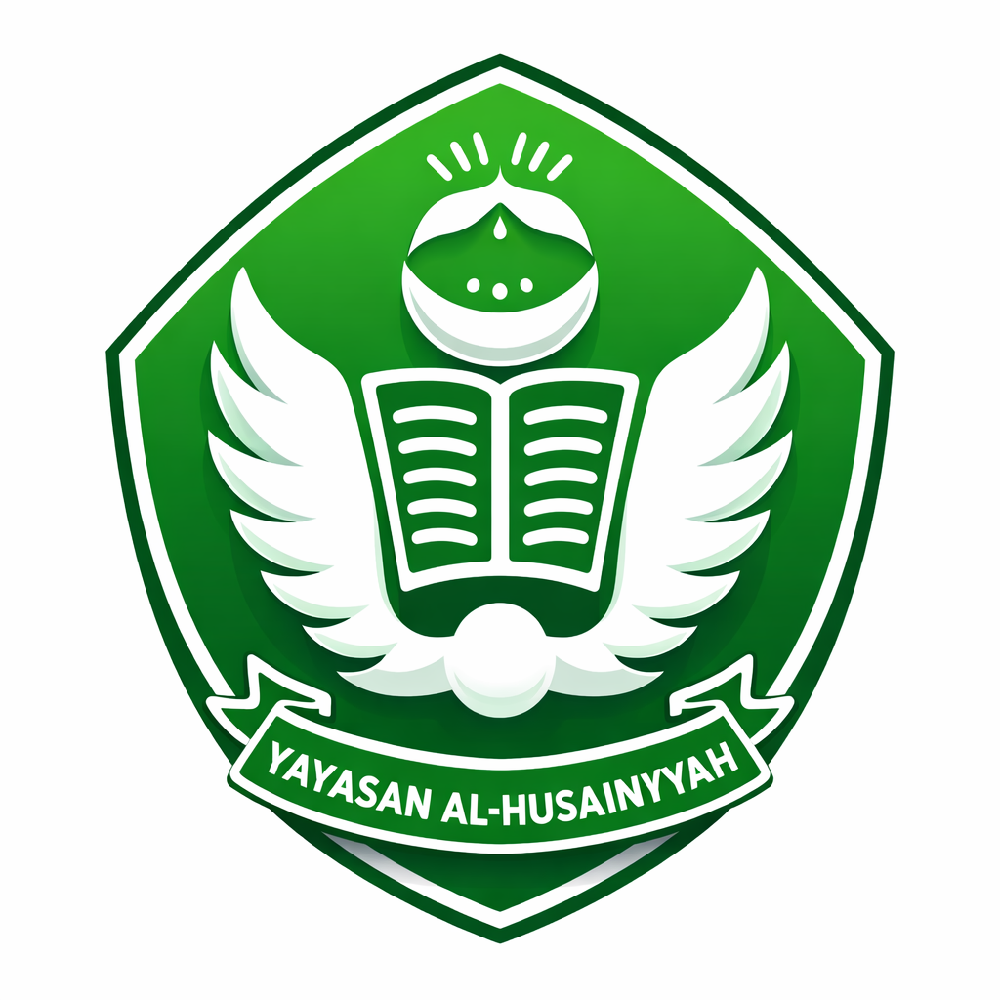

Sejarah Yayasan
Yayasan Al Husainiyyah resmi terbentuk dengan Ustadz Husen sebagai ketuanya. Sejak saat itu dimulailah babak perjuangan untuk merealisasikan gagasan beliau. Target yang dicanangkan adalah dalam waktu satu tahun harus sudah ada bangunan serta program pendidikan yang berjalan.
Pada awalnya, Ustadz Husen berniat mendirikan sebuah pesantren. Namun setelah mempertimbangkan berbagai hal—seperti kebutuhan dana yang besar untuk pembangunan asrama santri, biaya operasional harian, serta keterbatasan sumber daya manusia—ia memutuskan untuk mengubah rencana tersebut. Target kemudian bergeser menjadi pendirian sebuah sekolah dasar umum yang dapat dibangun lebih cepat, tetapi dengan porsi pendidikan agama yang lebih besar dibandingkan sekolah dasar pada umumnya.
Ustadz Husen kemudian mulai mensosialisasikan rencana pendirian yayasan dan pembangunan sekolah kepada para jemaahnya, keluarga besar, serta kelompok pengajian yang ia bina. Dalam setiap tausiah, beliau senantiasa memotivasi para jemaah agar menyadari pentingnya pendidikan formal bagi anak-anak yang dibarengi dengan dasar agama yang kuat sebagai bekal menghadapi kehidupan bermasyarakat dan bernegara.
Beliau juga menyampaikan ajaran Islam tentang kewajiban berinfak. Untuk itu, ia membeli puluhan kencleng (celengan) dan membagikannya kepada para jemaah agar mereka dapat mengisi infak secara rutin.
Respons jemaah sangat baik. Dengan penuh kepercayaan, mereka mendukung sepenuhnya karena merasa diberi kesempatan untuk beramal dan menyalurkan infak mereka. Pada waktu-waktu tertentu, Ustadz Husen secara berkala mendatangi para jemaahnya dengan mengayuh sepeda untuk membuka kencleng dan mengumpulkan infak tersebut.
Dalam waktu beberapa bulan saja, dana yang terkumpul sudah cukup untuk memulai pembangunan sekolah. Langkah pertama adalah menyiapkan lokasi. Kebun jeruk yang ada dibongkar, pohon-pohon kelapa, alpukat, dan cempedak ditebang, kemudian tanah diratakan.
Ustadz Husen merancang sendiri bangunan sekolah tersebut. Ia membeli bahan-bahan bangunan seperti bata, pasir, dan semen, sekaligus mengawasi para tukang yang bekerja. Dalam beberapa bulan berdirilah bangunan sederhana dengan tiga ruang kelas yang siap digunakan untuk kegiatan belajar mengajar.
Pada tahun ajaran 1972/1973, Sekolah Dasar Al Husainiyyah resmi dibuka. Sekolah ini menerima murid dari anak-anak di sekitar lingkungan dan disambut dengan antusias oleh masyarakat.
Ustadz Husen turut mengajar agama serta menanamkan nilai kehidupan dan akhlak yang baik kepada para murid. Ia juga membuat program gerakan tabungan murid untuk mengajarkan hidup hemat dan membantu biaya pendidikan mereka di masa depan.
Sekolah terus berkembang. Murid datang tidak hanya dari lingkungan sekitar tetapi juga dari kampung-kampung lain.
Pada tahun 1980, beliau mendirikan Taman Kanak-Kanak Al Husainiyyah yang dikelola oleh putrinya, Siti Sarah. Kemudian pada tahun 1986 didirikan Sekolah Menengah Pertama (SMP) Al Husainiyyah yang kegiatan belajarnya dilaksanakan pada sore hari setelah kegiatan SD.
Dengan berdirinya TK, SD, dan SMP, lengkap sudah tiga jenjang pendidikan yang dicita-citakan Ustadz Husen.
Pada tahun 1992 beliau menunaikan ibadah haji. Pada akhir tahun 2001 beliau mengalami stroke dan pada hari Kamis, 31 Januari 2002 Ustadz H. Moh. Husen wafat dan dimakamkan di kompleks sekolah Al Husainiyyah.
Setelah wafatnya beliau, kepengurusan yayasan dilanjutkan oleh anak-anaknya untuk meneruskan perjuangan yang telah dirintis.
Pada tahun 2010, untuk menyesuaikan dengan Undang-Undang Yayasan, nama yayasan diubah menjadi Yayasan Al Husainiyyah Muthoyyibah dengan menambahkan nama ayah beliau, Muthoyib. Perubahan nama tersebut disahkan melalui Akta Notaris Linda Mardinawati, S.H., Nomor 1 tanggal 6 Agustus 2010.